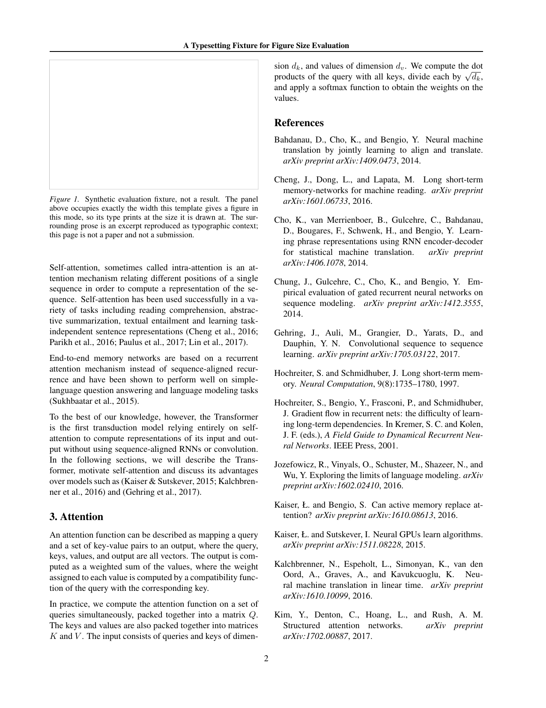

Same content and frozen line breaks as the existing LaTeX reference. Body text, references, header and folio are HTML with local fonts; formula fragments are SVG paths. No TeX, PDF renderer or Pyodide runs in this page.
